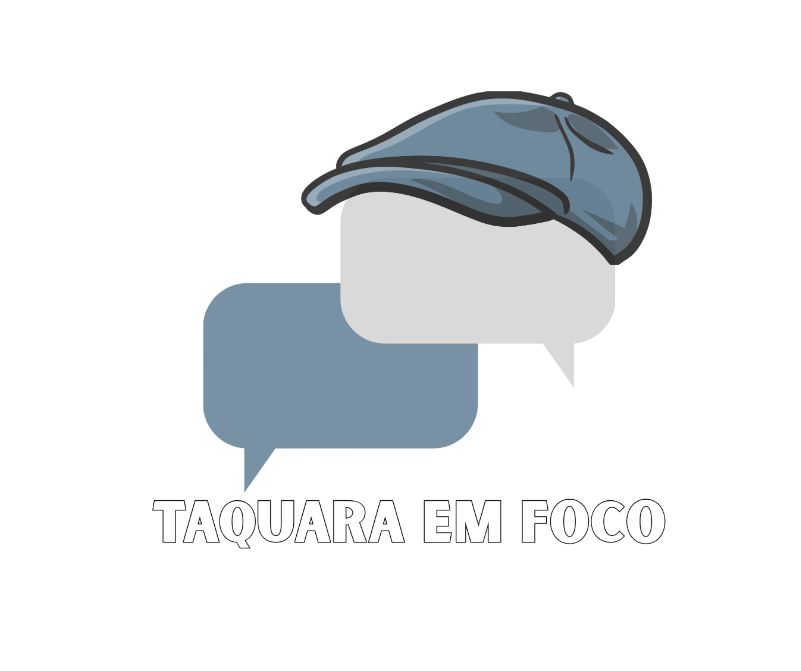

Câmara Municipal de Taquara/RS — 2025 e 1º semestre de 2026
Por Diogo Corrêa · Instrumento cidadão de transparência · Dados públicos das atas da Câmara
| Vereador | Partido | Bloco | 2025 | 2026 (1º sem) | Total 18m |
|---|
Este painel é um instrumento cidadão de transparência, construído a partir de dados públicos das atas da Câmara Municipal de Taquara/RS.
Só pontuamos o que o vereador faz por iniciativa própria. Não pontuamos o que lhe é atribuído pela maioria.
Comissões permanentes, relatorias, grupos de trabalho e presidência de audiências foram excluídos por serem cargos de indicação política majoritária — não medem atuação individual.